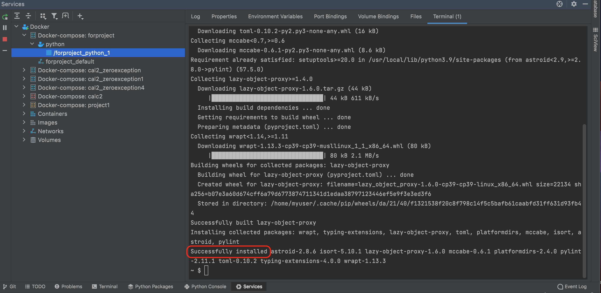
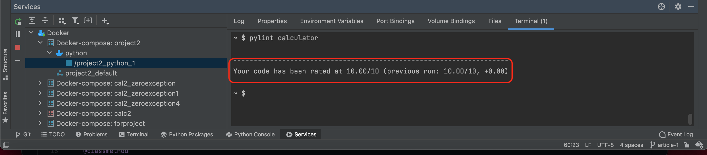
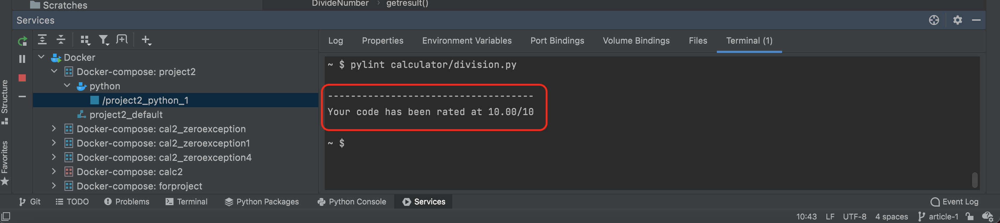
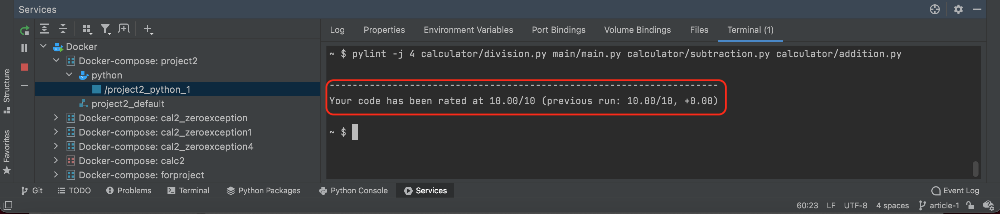

© Copyright 2021, Umang Gandhi
 W3C Validator
W3C Validator
Pylint is a tool that checks for errors in Python code, tries to enforce a coding standard and looks for code smells. It can also look for specific type errors, it can recommend suggestions about how particular blocks can be modified and can provide information about the code's complexity.
Pylint will display several messages as it analyzes the code, and it can also be used for displaying some statistics about the number of warnings and errors found in different files. The messages are classified under various categories such as errors and warnings.
By using command "pip install pylint" you can install pylint. Fig.1 and Fig.2 shows the command and successful installation of pylint respectively.
Fig 1
Fig 2
Pylint is meant to be called from the command line. The usage is "pylint [options] modules_or_packages". Fig.3 and Fig.4 shows the command and the rate of the code respectively.
Fig 3
Fig 4
Fig.5 and Fig.6 shows the command and the rate of the code for the specific directory respectively.
Fig 5
Fig 6
You can also check the Fig.7 and Fig.8 shows the command and the rate of the code for the specific directory respectively.
Fig 7
Fig 8
I've included a glossary of Object-Oriented Programming Terms below, which I encourage you to read through so that you can better comprehend the ideas we'll be addressing in future articles.
The Factory Method design pattern is a creational design pattern that provides an interface for creating objects in a superclass while allowing subclasses to choose the type of objects created.
The creation of an object (or a "instance" of a particular class) in an object-oriented programming (OOP) language is referred to as instantiation.
An Object is an instance of a Class. A class is like a blueprint while an instance is a copy of the class with actual values. Python is object oriented programming language which stress on objects i.e. it mainly emphasize on functions.
It is a user-defined data type, which holds its own data members and member functions, which can be accessed and used by creating an instance of that class. A class is like a blueprint for an object.
A namespace is a declarative region that provides a scope to the identifiers (the names of types, functions, variables, etc) inside it. Namespaces are used to organize code into logical groups and to prevent name collisions that can occur especially when your code base includes multiple libraries.
Constructors are generally used for instantiating an object. The task of constructors is to initialize(assign values) to the data members of the class when an object of the class is created. In Python the __init__() method is called the constructor and is always called when an object is created.
Sample data is referred to as fixtures. Fixtures let you pre-populate your testing database with data before running your tests.
Type Hinting is method by which we can force function to accept the desired data type.
Type-casting is the process of converting an expression of one type into another.
Unit testing is the first level of software testing where the smallest testable parts of a software are tested.